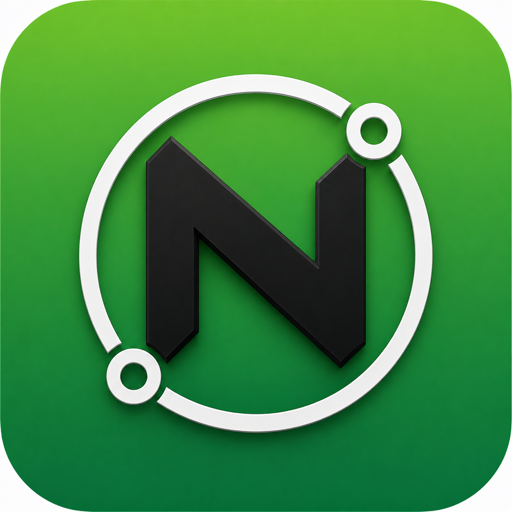

The Engineer's Toolkit
60+ network engineering tools in your pocket. DNS, ping, TLS cert inspection, subnet math, WHOIS, traceroute, port scanning, recipe workflows. Built by a network engineer, for network engineers.

Every tool you reach for, in one app. The first 6 are free; Pro unlocks the rest.
Made by a network engineer, used at customer sites.
No account. No subscription noise on launch. Open the app, run a tool, get the answer.
Tap any RFC, standard, or man-page citation in a result and get the relevant section right inside the app.
Every run is logged with timestamps. Tap any history entry to re-open the result. Pin frequent sites.
Add a hostname to the watch list and get local notifications 30 / 14 / 7 / 1 days before TLS expiry.
Multi-tool workflows for common debug paths. Outage triage? One tap runs DNS + ping + TLS + traceroute.
Pro feature. Export any tool's output as a clean PDF for tickets, customer reports, or runbooks.
Same app on iPhone, iPad, and Mac. Universal purchase — buy Pro once, use everywhere.
Tool runs query directly from your device. The only network call is the one you initiated. No analytics, no tracking.
무료 tier is enough for most field debug. Pro removes friction.
6 essential tools: DNS, Ping, Public IP, Subnet Calc, TLS Cert, WHOIS. Unlimited runs.
All 60+ tools, history, saved sites, recipes, cert watch, widgets, PDF export. iOS + Mac.
Setup, troubleshooting, and the philosophy behind NetForge
Network engineers, sysadmins, DevOps engineers, and anyone who debugs network problems at a customer site or from a laptop. The app replaces a folder of bookmarks (whatsmydns.net, mxtoolbox, ipinfo.io, sslchecker, subnet calculator, etc.) with a single offline-first tool.
Field debug is rarely "just DNS" or "just ping". A flaky outage triage usually involves DNS, then ping, then traceroute, then TLS, then WHOIS, then BGP. Switching apps wastes seconds. NetForge keeps state across tools, has a history of every run, and offers recipe workflows that bundle the common sequences.
The reference content (RFC index, standards, man pages, IANA ports, subnet math) works offline. The active tools (DNS, ping, traceroute, TLS, WHOIS) need internet — they make real network calls. Subnet Calc is fully offline.
Yes. Mac Catalyst version is in App Store review now and ships imminently. Universal purchase — Pro on iOS unlocks Mac and vice versa.
A, AAAA, CNAME, MX, TXT, NS, SOA, SRV, CAA, PTR (reverse), DNSKEY, DS, RRSIG, NSEC, NSEC3, TLSA, SVCB, HTTPS. You can pick which DNS resolver to query (1.1.1.1, 8.8.8.8, 9.9.9.9, your ISP, custom). Wire-format queries — no DoH proxy.
iOS sandboxing doesn't allow raw ICMP from a non-system app. NetForge uses TCP ping (configurable port — default 443) which gives you reachability + RTT for the part of the path that matters most for service availability. Traceroute uses TCP-based hop discovery for the same reason.
Full chain (leaf, intermediates, root), SAN list, SNI, expiry date with countdown, signature algorithm, key size, OCSP staple if present, cipher suite negotiated, TLS version, SCT count. Tap any cert in the chain to see its full PEM and computed fingerprints.
IPv4 + IPv6. CIDR notation. VLSM (variable-length subnet mask) breakdown — give it a /24 and ask for 4 /26 + 2 /29, get the assignments. Wildcard mask conversion. Supernet aggregator. CIDR overlap detector. All offline.
Most. NetForge follows the standard WHOIS referral chain (IANA → registry → registrar). For modern TLDs that have RDAP (the JSON-based replacement), NetForge uses RDAP for cleaner output. For ccTLDs without WHOIS exposure (a few exist), NetForge tells you so.
무료: 6 tools (DNS Lookup, Ping, Public IP, Subnet Calculator, TLS Cert Inspector, WHOIS) with unlimited runs. Pro: all 54 additional tools, run history, saved sites, recipe workflows, cert expiry watch list with notifications, home-screen widgets, PDF export.
도구 you reach for ad-hoc deserve to be paid for once. A monthly subscription for an app you might use every day OR not for a month makes no sense. $19.99 lifetime, no upsells, no recurring billing. The price will likely go up over time but anyone with the lifetime keeps it.
Yes. Once purchased, Pro is unlocked on every device tied to your Apple ID — iPhone, iPad, Mac. Use Restore Purchase if you change devices.
The free 6 tools are the most-used in the app and are unlimited. Tap any locked tool to see exactly what Pro adds — the paywall shows the full feature list. There's no trial period, but the lifetime price is low enough to be a low-stakes commit.
Directly from your device to the network endpoint or service you specified. NetForge has no server. The only "third-party" call is to ipinfo.io for the Public IP tool — opt-in on first run. Everything else is direct: DNS to the resolver you picked, ping to the host you typed, TLS handshake to the SNI host you queried.
Yes. History is stored in iOS-encrypted SwiftData on your device only. Never leaves the phone. Can be cleared at any time from Settings.
No. No analytics SDK. No crash reporter that sends data off-device. App Store nutrition label confirms: zero data collected.
Either the resolver is unreachable, or there's an iOS network issue. Try switching the resolver in Settings (1.1.1.1 vs 8.8.8.8 vs 9.9.9.9). If all resolvers fail: airplane mode? Captive portal not signed in? Check Wi-Fi.
NetForge's ping uses TCP on port 443 by default. If a firewall blocks 443 to that IP from outside (load balancer in front, etc.) but allows the host's actual web port, the TCP ping fails while HTTP works. Try changing the ping port in Settings to match the service's listening port.
Different SNI. The cert NetForge sees is the one served when SNI = the hostname you typed. Safari may be sending a different SNI (or none, falling back to the default cert). Compare the SAN in NetForge's report to the actual hostname in your Safari URL.
Check Settings → Notifications → NetForge is enabled. Background expiry checks fire on app foreground (current implementation). v1.1 adds true BGAppRefreshTask scheduling. If you haven't opened the app in > 7 days, you may miss the 7-day warning — open the app weekly or rely on the 14 / 30 day warnings.
Expected when on cellular. Your carrier-NATs all phones behind a shared egress IP (CGNAT). Switch to your home Wi-Fi to see your real public IP.
Some ccTLDs (.ai, .io historically, certain country registries) don't expose WHOIS at all, only an in-browser web form. NetForge will tell you when no WHOIS is available. For those, the registry's web page is the source of truth.
Many ISPs and corporate firewalls drop the response packets that traceroute relies on. Hops between the source and destination silently swallow the probe. Look at the FIRST hop (your gateway) and the LAST hop (the destination) — those usually answer. The hops in between being dark is normal and not a sign of a problem.
NetForge is on the App Store now. 무료 6개 도구, $19.99 lifetime for the rest. iOS 17+, macOS 14+.